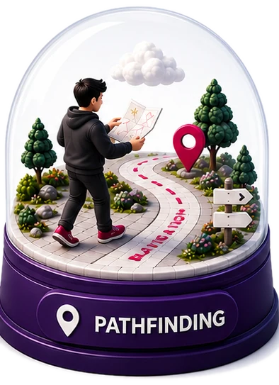

Can voice agents help you get through the day?
DuplexWorld puts speech-to-speech agents through six worlds of an ordinary day and scores what happened three separate ways. Across 3,825 conversations, the three capabilities turn out not to travel together.

One voice agent, one simulated caller, one world, and three questions asked of the same run: did the task get done, how did the conversation go, and how did it sound.
Five of the worlds are institutional telephone lines. The sixth, Pathfinding, is a city, and it keeps moving whether or not anyone is talking.
We are not measuring the day
Speech-to-speech agents answer customer-care lines and walk people around unfamiliar cities. Each of those is a conversation with nuanced dynamics and analytical demands at once, held against muffled speech, background noise and an emotionally diverse range of callers. Existing benchmarks are shaped as tests of tool calling against a database, which leaves both of those unmeasured.
One result before the design. The system that most reliably ignores distractions, selectivity 0.977 pooled and the best in every single world, completes 0.011 of the tasks it is given. A leaderboard built on turn-taking and selectivity would rank it near the top, and the two systems that sound best are not the two that complete most.
Three separate rooms
Verifiable outcomes. τ-bench introduced database-state grading and Passᵏ, the probability that all k runs of a scenario succeed; τ²-bench added a dual-control telecom domain and reported an 18 to 25 point Pass@1 drop when the agent must guide rather than act. Both asked the right question, does the world end up in the right state, of text agents.
Conversational dynamics. Full-Duplex-Bench defined automatic turn-taking metrics, its successors added overlap handling and a live examiner, Talking Turns judged against human conversation, and HumDial released dual-channel human dialogues. Today's commercial systems have largely grown past these, and our results sharpen the point rather than retire it: dynamics metrics alone are winnable by silence.
Grounded voice agents. τ-Voice (278 tasks), EVA-Bench (213 scenarios), Full-Duplex-Bench v3 and the interruption suites EchoChain and IHBench put stronger agents on verifiable tasks. In every one of them the agent actuates, a record system adjudicates, and nothing happens between utterances. DuplexWorld spans that setting and a navigation world under one harness, and it is hard even for this generation: the best any system reached in any single world is Pass@1 0.674, and 0.533 in the world that moves on its own clock.
| Benchmark | full duplex | dynamics | agentic task | naturalness | reliability Passᵏ | sim. valid. | harness sens. | nav. world |
|---|---|---|---|---|---|---|---|---|
| τ-bench2024 | ||||||||
| τ²-bench2025 | ||||||||
| Full-Duplex-Bench v1, v22025 | ||||||||
| Talking Turns2025 | ||||||||
| HumDial2026 | ||||||||
| EchoChain2026 | ||||||||
| IHBench2026 | ||||||||
| Full-Duplex-Bench v32026 | ||||||||
| τ-Voice2026 | ||||||||
| EVA-Bench2026 | ||||||||
| DuplexWorldours |
Six worlds, one harness, no composite
The agent perceives only audio and tool returns and emits only audio and tool calls. The terminal state is then scored against a gold state authored with the scenario, so success is a property of the world rather than of the transcript.
Five worlds share one premise and differ on what decides correctness
A caller reaches an institution's telephone line after self-service has already refused them. The agent owns the call, may not route away, and does not get the governing clause corpus in its prompt, so knowing when to look something up is itself under test. Several regimes are enforced in the tool surface rather than in prompt: Banking contains no tool that would make an employee hear a one-time code aloud.

All six worlds carry one volatility stressor: the world can change with no notification, discoverable only by re-querying. The world changes (a record moves mid-call, a closure appears on the route), the user's intent changes (the caller revises a premise, a second destination surfaces), or the user's execution diverges (the caller misacts, the walker takes the wrong turn). Each demands a different repair, and prior interruption work varies only intent.
Eleven conversation shapes, nine of them in every enterprise world
Every scenario instantiates one of eleven conversation types: a domain-independent shape, filled in by the world's premise, records and risk tiers. Nine run in every enterprise world, three scenarios each. In all of them the caller never names the operation; they describe a symptom, and inferring what is being asked for is part of the task.
Single intent
One request, one resolution path. The control condition.
CallerI need to move my flight to the Thursday.
AgentFound the booking. Thursday 14:05, same fare class. Shall I move it?
Multi intent
Several requests, resolvable in more than one order, with at least one dependency.
CallerAdd my new address, and send the replacement card there.
AgentAddress first, then the card, or it ships to the old one.
Policy refusal
A well-formed request that must be refused. Correctness is a property of what is withheld.
CallerJust tell me what the adjuster decided.
AgentI am not able to share or influence that decision. I can log your account of the loss.
Record disambiguation
More than one record matches what the caller said; acting before disambiguating is the failure.
CallerThe claim for the Tuesday visit.
AgentThere are two Tuesday visits on this policy. Which provider was it?
Identity verification
Authority must be established first, and a failed check must not leak that the record exists.
CallerIs there an account under that number?
AgentI am not able to confirm anything before verification. Could I take your date of birth?
Guided procedure
The effectors move to the user: the agent instructs, waits, and must trust an unverifiable report.
AgentHold the button until the light turns amber, then tell me what you see.
CallerIt is amber now.
Mid-call correction
The caller revises a premise after the agent has begun acting on it.
CallerSorry, not the Milan one. The Rome one.
AgentStopping the Milan change. Reopening the Rome booking now.
Suspension
The call is interrupted and resumed across a gap the agent must hold state over.
CallerHold on, someone is at the door.
AgentOf course. I still have the shipment open and nothing has been sent.
Narrative intake
A long unstructured account from which the agent must extract, confirm and file the facts.
CallerIt was raining, I was on the ring road, and the car ahead just stopped.
AgentSo: rear-end, ring road, wet road. Any injuries to record?
All nine run in every one of the five enterprise worlds, three scenarios each, and the excerpt under each name is from a scored call rather than an illustration. Two more shapes arise only in the navigation world:
Rerouting
Closures missing from the map seal every visible route, so a belief formed from a tool result expires silently.
All-day assistance
A second goal emerges on arrival at the first; the test is staying useful over a long horizon.
Pathfinding answers the same question perceptually
A voice copilot must walk a pedestrian, one street corner at a time, to a named entrance on a synthetic 8 by 8 grid of Midtown streets. The walker holds their real junction and heading but knows nothing of the grid; the copilot holds the map, an approximate GPS and a write-only probe for what it believes, but cannot see the street.
The Pathfinding world: the released tool surface, 14 calls
The Pathfinding world, drawn to scale
It is also the only world that moves on its own clock: state changes through the walker's physical actions, so it can change while both parties are silent, and an utterance planned at tick t can be wrong by the time it lands at tick t plus k.
The three shapes navigation elicits
Single intent
One request, one resolution path: a base route of five blocks and two turns, nothing closed. The control condition.
Rerouting
Four closures absent from the copilot's map seal every route it can see. Exactly one seven-block route survives, and querying early returns nothing, so a belief formed from a tool result expires silently.
All-day assistance
Two legs of five and six blocks. The second destination is revealed only on arrival at the first, so the test is staying with the walker, and useful, over a long horizon.
One harness, held fixed across all six worlds
Simulated time advances in 200 ms ticks, so model latency never shifts an event's position and tool results land on the next tick. A text model writes the caller's words, ElevenLabs speaks them through a persona pinned per scenario, and on the realistic channel a second model decides twice a second whether to interrupt or backchannel. Both channels are telephone audio, G.711 µ-law at 8 kHz. Turn-taking control sits entirely on the user side, and the agent is never told any threshold.
Twelve metrics, three pillars, and no composite
Conversational dynamics
Scores every floor transfer's offset on an on-time curve chosen by the transfer's kind. A single unanswered user turn zeroes the conversation. Ported from EVA-Bench, including its unanswered-turn rule, and the one metric in the suite where silence is penalised rather than rewarded.
One topic-free judge pass over the transcript, scoring unnecessary tool calls, information loss, redundancy and question quality.
The fraction of injected distractor events correctly ignored, scored against gold labels written at injection time.
Agentic capability
A canonical hash of the record store against a gold replay; in Pathfinding, the walker's final junction and side of street against the destination.
The reward multiplies exactly the binary factors each scenario names: goal state, a gold-action match, and where what is said or refused is the point, a judged assertion. Pass@1 is the mean single-run reward; Pass³ is τ-bench's Passᵏ at k = 3, the probability that all three of three runs pass.
Measured against each task's own reference workload: the ideal tool-call count in the enterprise worlds, the optimal block count in Pathfinding. The under-effort share cannot be won by silence, because it is signed against the workload.
Naturalness
One judge pass over the transcript with the agent's instructions, role and tool schemas. Five binary dimensions scored as their minimum.
Three no-reference mean-opinion-score predictors run over the isolated agent channel.
The harness elicits more than the suite scores: backchannel placement, the prosody of overlap and whether a mid-utterance revision is fluent are all elicited and none is scored. A system could be graceless at every overlap and lose nothing on the agentic pillar. That is why the pillars are never composed into one number, and why what follows is a table rather than a ranking.
Three capabilities, one table, and they do not travel together
| System | Agentic capability | Conversational dynamics | Naturalness | ||||||||
|---|---|---|---|---|---|---|---|---|---|---|---|
| GS | Pass@1 | Pass@3 | Pass³ | TT | CP | SEL | FAI | DNSMOS | UTMOS | NISQA | |
| Voice Think Fast | 0.779±.031 | 0.490±.039 | 0.694±.068 | 0.266±.057 | 0.635±.015 | 1.814±.051 | 0.630±.024 | 1.880±.052 | 3.127±.007 | 3.687±.010 | 3.093±.009 |
| Realtime-2.1 | 0.619±.037 | 0.433±.035 | 0.659±.068 | 0.212±.048 | 0.653±.018 | 1.543±.048 | 0.414±.024 | 2.025±.057 | 3.350±.004 | 4.095±.010 | 3.600±.010 |
| 3.1-Flash-Live | 0.726±.029 | 0.398±.039 | 0.639±.073 | 0.165±.054 | 0.388±.012 | 1.511±.043 | 0.742±.024 | 1.720±.051 | 3.378±.008 | 3.402±.010 | 3.477±.012 |
| Realtime-2.1-mini | 0.405±.038 | 0.188±.028 | 0.358±.065 | 0.056±.028 | 0.521±.025 | 1.307±.041 | 0.468±.023 | 1.631±.054 | 3.334±.009 | 4.022±.033 | 3.611±.022 |
| 2 Sonic | 0.263±.028 | 0.011±.007 | 0.019±.019 | 0.006±.009 | 0.566±.021 | 1.019±.012 | 0.977±.006 | 1.635±.054 | 3.172±.015 | 2.556±.017 | 2.562±.017 |
The agentic pillar orders the five cleanly, Grok Voice Think Fast 1.0 at Pass@1 0.490 down to Nova 2 Sonic at 0.011. The four above Nova 2 Sonic are the engaged systems throughout; Nova 2 Sonic is the disengaged one.
Reaching the right state is not doing the task
Read the first column against the second. Across the 25 enterprise cells the mean gap between the goal-state check and the reward is +0.255, and every cell is positive. A do-nothing agent passes goal state wherever the gold terminal state equals the seeded state, so a benchmark that headlines goal state is partly reporting how many of its tasks are no-ops. The reward is lost in the remaining conjuncts: acting through the sanctioned sequence, and saying what was done.
The pillars dissociate
GPT-Realtime-2.1 holds the best turn-taking at 0.653 and Grok the best conversation progression at 1.814 on a 1 to 3 scale, while Gemini-3.1-Flash-Live is third on the reward and last on turn-taking at 0.388. The mechanism is worth stating plainly: tool calls introduce silence, silence is scored as a timing failure, and any composite that gates on timing penalises acting. That gives a mechanism for EVA-Bench's finding that no system exceeds 0.5 on both accuracy and experience.
Nova 2 Sonic is the sharpest dissociation: the best selectivity in every world beside an agentic column of near-zeros. All five sit within a quarter point on DNSMOS, and the two leaders on UTMOS and NISQA, GPT-Realtime-2.1 and its mini, differ by a factor of 2.3 on the reward.
Subject matter moves the score as much as the system does
That range, 0.474 for one system, is wider than the spread across the four engaged systems inside any single world, which peaks at 0.445. Yet the ordering barely moves. Because the five enterprise worlds share harness, metrics and configuration, that interval is a measured null: how far a voice-agent number moves when only the subject matter changes.
Reliability decays fast
Grok retains 54 percent of its Pass@1 at k = 3 and GPT-Realtime-2.1 49 percent, so a single-run leaderboard overstates what any system will do three times running. Successes are not independent draws: every engaged enterprise cell beats the prediction that cubing Pass@1 would give, by factors of 1.2 to 91, so failure concentrates on particular scenarios and is diagnosable rather than stochastic.